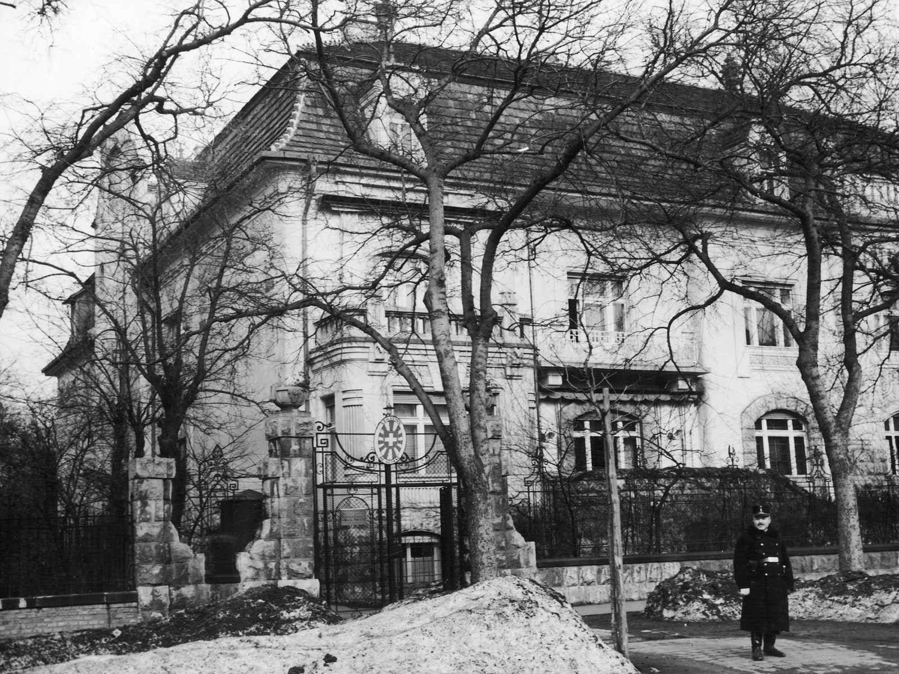
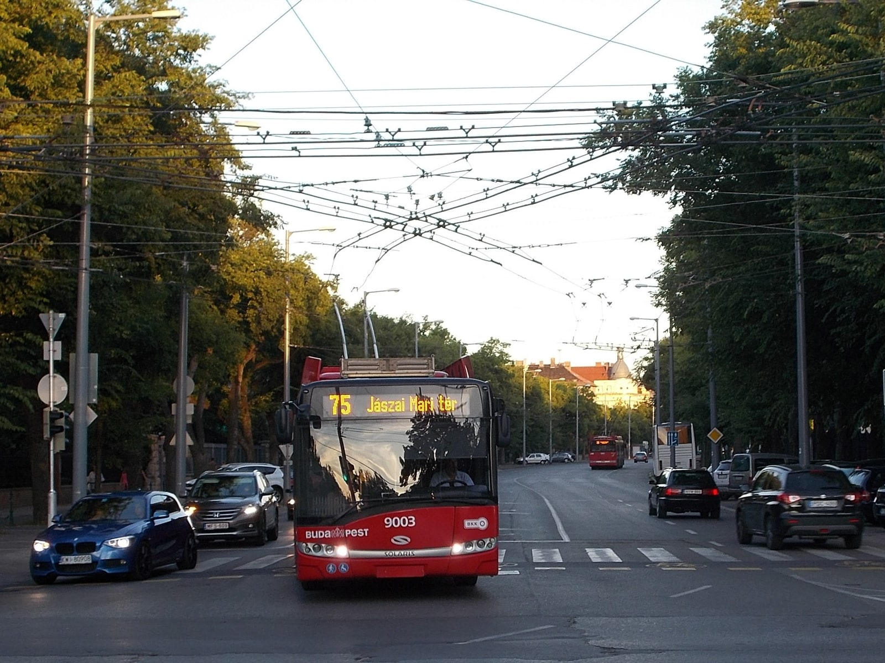
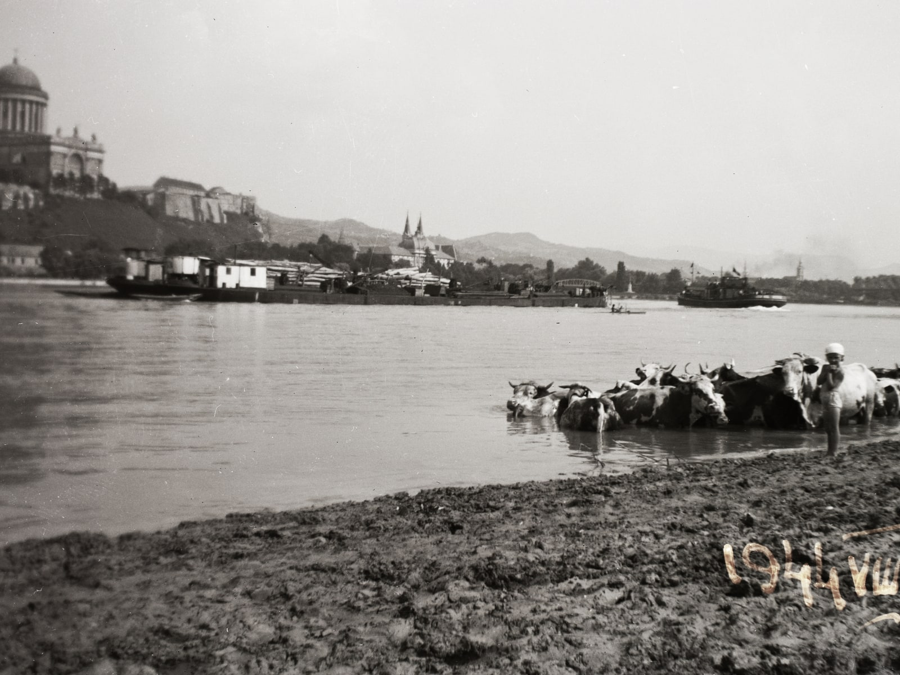
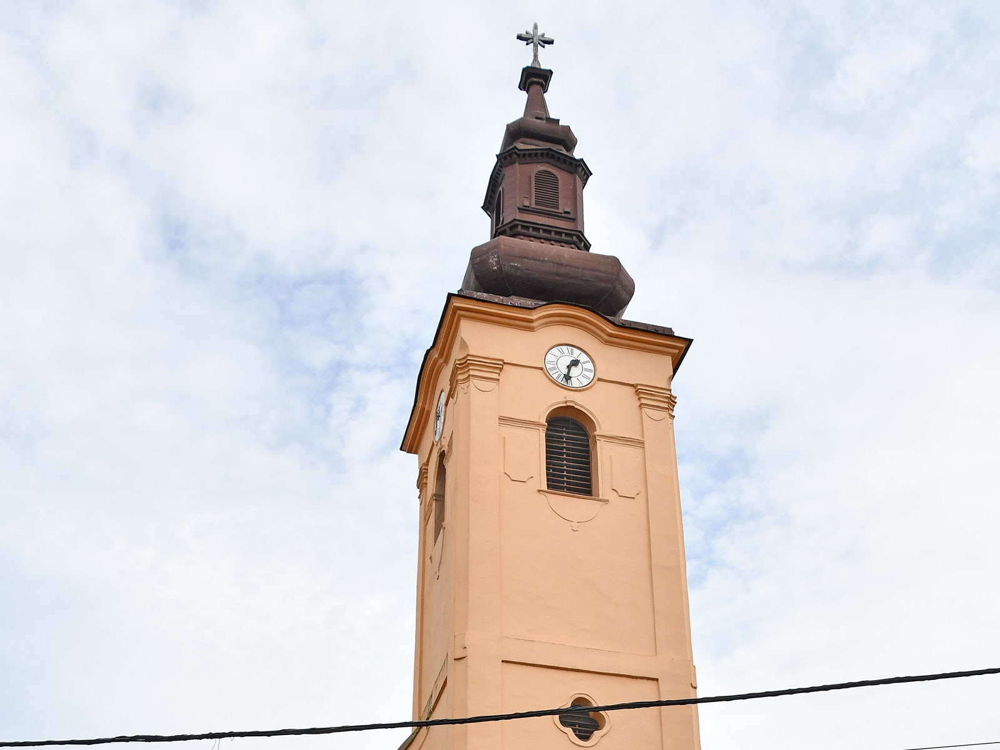
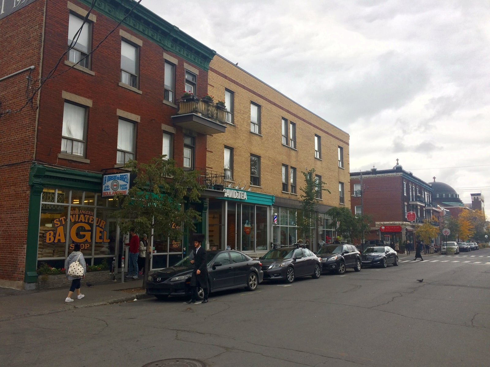

Then and Now
Three places along Judy's path. Drag the gold divider on each picture to see the same place in two different decades. Each pair pairs a wartime photograph with one taken seventy or eighty years later.
Stefania Street, Budapest
The street where Judy lived as a young child. The 1943 photograph shows Stefania ut number 107, the wartime Swiss Embassy. Carl Lutz issued protective letters from this building that saved tens of thousands of Hungarian Jews the next year. Drag the slider to see the same street in 2018.


Then: FORTEPAN / Archiv fur Zeitgeschichte ETH Zurich / Agnes Hirschi via Wikimedia Commons (CC BY-SA 3.0). Now: Globetrotter19 via Wikimedia Commons (CC BY-SA 3.0).
{kind=link}
{kind=link}
Rural Hungary, the autumn Judy was hidden
Judy was relocated to the village of Pincehely in Tolna County in autumn 1944 to escape Allied bombing. No clean-license photograph of Pincehely from the 1940s exists in any public archive we could verify. The wartime image you see on the left is the closest available temporal anchor, a peaceful countryside scene shot in August 1944, the very month Judy was hidden, but two hundred kilometres north of Pincehely. The right side is the church tower of Pincehely's Roman Catholic Church of the Visitation, photographed in 2025. Drag the divider to move between the two.


Then: FORTEPAN / Album002 (Fortepan 14965) via Wikimedia Commons (CC BY-SA 3.0). This photograph is of Esztergom on the Danube, not Pincehely. It is used here as a temporal anchor for August 1944. Now: Pasztilla / Attila Terbocs via Wikimedia Commons (CC BY-SA 4.0).
{kind=link}
{kind=link}
From Pier 21 to Saint-Viateur
After the war Judy and her family came to Canada. Most Hungarian Jewish refugees arrived at Pier 21 in Halifax, then continued to cities including Montreal, where many settled in the Mile End neighbourhood. The 1948 photograph shows a young immigrant mother and her child waiting in the immigration shed at Pier 21. The 2018 photograph shows rue Saint-Viateur in Mile End, with the Saint-Viateur Bagel shop on the left, one of the original Jewish-immigrant-founded businesses still operating on the same street.

Then: E.A. Bollinger, Nova Scotia Archives, public domain (Canada). Now: Andre Carrotflower via Wikimedia Commons (CC BY-SA 4.0).
{kind=link}
.jpg){kind=link}